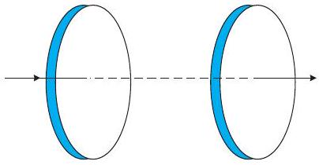
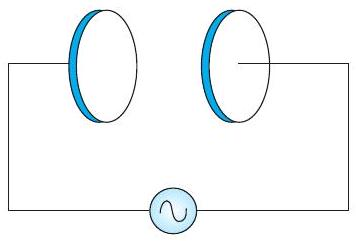

25 MHz आवृत्ति की एक समतल वैद्युतचुंबकीय तरंग निर्वात में x-दिशा के अनुदिश गतिमान है। दिक्काल (space) में किसी विशिष्ट बिंदु पर इसका E = 6.3 ĵ V / m है। इस बिंदु पर B का मान क्या है?
किसी समतल वैद्युतचुंबकीय तरंग में चुंबकीय क्षेत्र By = (2 × 10-7) T sin (0.5 × 103 x+1.5 × 1011 t) है।
तरंग की आवृत्ति तथा तरंगदैर्घ्य क्या है?
विद्युत क्षेत्र के लिए व्यंजक लिखिए।
चित्र 8.5 में एक संधारित्र दर्शाया गया है जो 12 cm त्रिज्या की दो वृत्ताकार प्लेटों को 5.0 cm की दूरी पर रखकर बनाया गया है। संधारित्र को एक बाह्य स्रोत (जो चित्र में नहीं दर्शाया गया है) द्वारा आवेशित किया जा रहा है। आवेशकारी धारा नियत है और इसका मान 0.15A है।

धारिता एवं प्लेटों के बीच विभवांतर परिवर्तन की दर का परिकलन कीजिए।
प्लेटों के बीच विस्थापन धारा ज्ञात कीजिए।
क्या किरखोफ का प्रथम नियम संधारित्र की प्रत्येक प्लेट पर लागू होता है? स्पष्ट कीजिए।
एक समांतर प्लेट संधारित्र (चित्र 8.6), R = 6.0 cm त्रिज्या की दो वृत्ताकार प्लेटों से बना है और इसकी धारिता C = 100 pF है। संधारित्र को 230 V, 300 rad s-1 की (कोणीय) आवृत्ति के किसी स्रोत से जोड़ा गया है।

चालन धारा का rms मान क्या है?
क्या चालन धारा विस्थापन धारा के बराबर है?
प्लेटों के बीच, अक्ष से 3.0 cm की दूरी पर स्थित बिंदु पर B का आयाम ज्ञात कीजिए।
10-10 m तरंगदैर्घ्य की X-किरणों, 6800 Å तरंगदैर्घ्य के प्रकाश, तथा 500 m की रेडियो तरंगों के लिए किस भौतिक राशि का मान समान है?
एक समतल वैद्युतचुंबकीय तरंग निर्वात में z-अक्ष के अनुदिश चल रही है। इसके विद्युत तथा चुंबकीय क्षेत्रों के सदिश की दिशा के बारे में आप क्या कहेंगे? यदि तरंग की आवृत्ति 30 MHz हो तो उसकी तरंगदैर्घ्य कितनी होगी?
एक रेडियो 7.5 MHz से 12 MHz बैंड के किसी स्टेशन से समस्वरित हो सकता है। संगत तरंगदैर्घ्य बैंड क्या होगा?
एक आवेशित कण अपनी माध्य साम्यावस्था के दोनों ओर 109 Hz आवृत्ति से दोलन करता है। दोलक द्वारा जनित वैद्युतचुंबकीय तरंगों की आवृत्ति कितनी है?
निर्वात में एक आवर्त वैद्युतचुंबकीय तरंग के चुंबकीय क्षेत्र वाले भाग का आयाम B0 = 510 nT है। तरंग के विद्युत क्षेत्र वाले भाग का आयाम क्या है?
कल्पना कीजिए कि एक वैद्युतचुंबकीय तरंग के विद्युत क्षेत्र का आयाम E0 = 120 N / C है तथा इसकी आवृत्ति v = 50.0 MHz है।
B0, ω, k तथा λ ज्ञात कीजिए।
E तथा B के लिए व्यंजक प्राप्त कीजिए।
वैद्युतचुंबकीय स्पेक्ट्रम के विभिन्न भागों की पारिभाषिकी पाठ्यपुस्तक में दी गई है। सूत्र E = h v (विकिरण के एक क्वांटम की ऊर्जा के लिए : फोटॉन) का उपयोग कीजिए तथा em वर्णक्रम के विभिन्न भागों के लिए eV के मात्रक में फोटॉन की ऊर्जा निकालिए। फोटॉन ऊर्जा के जो विभिन्न परिमाण आप पाते हैं वे वैद्युतचुंबकीय विकिरण के स्रोतों से किस प्रकार संबंधित हैं?
| विकिरण का प्रकार | फोटॉन ऊर्जा |
|---|---|
| γ-किरणें | 1.24 × 106 eV |
| X-किरणें | 1.24 × 104 eV |
| पराबैंगनी तरंगें | 4.12 eV |
| दृश्य तरंगें | 2.475 eV |
| अवरक्त तरंगें | 4.125 × 10-2 eV |
| माइक्रो तरंगें | 4.125 × 10-5 eV |
| रेडियो तरंगें | 1.24 × 10-6 eV |
एक समतल em तरंग में विद्युत क्षेत्र, 2.0 × 1010 Hz आवृत्ति तथा 48 V m-1 आयाम से ज्यावक्रीय रूप से दोलन करता है। [c = 3 × 108 m s-1]
तरंग की तरंगदैर्घ्य कितनी है?
दोलनशील चुंबकीय क्षेत्र का आयाम क्या है?
यह दर्शाइए कि E क्षेत्र का औसत ऊर्जा घनत्व, B क्षेत्र के औसत ऊर्जा घनत्व के बराबर है।